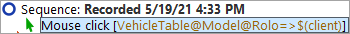

| Version 6.0.3 |
Subcomponents of tables, lists and trees can be addressed by indices. There are two main types: text and numeric indices. Let's record a mouse click to a table cell and analyze the recorded 'QF-Test component ID'.
You will see the recorded mouse click in the 'Extras' section.
|
|  | ||
|
| Figure 22.1: Addressing a table cell | ||
The 'QF-Test component ID' recorded is VehicleTable@Model&0. The single parts are:
VehicleTable is the 'QF-Test component ID' of the table component itself.
@ and & separate the single parts from each other and at the same time indicate
the type of index that follows: @ for a text index and
& for a numeric index.
Model is the text index for the table column with the title 'Model'.
0 is the numeric index for the first table row.
Note Numeric indices always start at 0.
You can use any index type for column or row. It is just important that the separator and the index type match.
The solution is to type VehicleTable&1&2 in the 'QF-Test component ID'
attribute of the 'Mouse event' node.
In order to address the model 'I5'
using text indices only, you would have to enter VehicleTable@Model@I5.
Using numeric indices you would write VehicleTable&0&4 and for mixed indices
VehicleTable&0@I5 or VehicleTable@Model&4.
The third type of index QF-Test supports is a text index containing a
regular expression. Regular expressions can be used to replace a string
by an expression that can match more than only one string.
For a detailed explanation of regular expressions please refer to the
manual.
So you could also address the cell for the model 'I5' using VehicleTable@Model%I.*.
Lists are addressed the same way as tables are, just with one index only.
A tree has only one index. This is the path down the tree to the node to be specified. The path consists of the respective nodes of the tree, separated by slashes ('/'). Let's record a mouse click to a tree:
For the tree node 'Description' the recorded 'QF-Test component ID' would be
DetailsTree@/Information/Description. The single parts are:
DetailsTree is the 'QF-Test component ID' of the tree component itself.
@ separates the 'QF-Test component ID' of the tree from the index and at the same
time indicates the type of index that follows: @ for a text index.
/Information/Description is the text index for the tree path to
'Description'.
If you wanted to address the
node using a numeric index you would have to use DetailsTree&/0/1.
| Last update: 9/6/2022 Copyright © 2002-2022 Quality First Software GmbH |